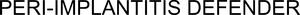

Trade Mark Journal No.2026/009 27 February 2026
WO0000001885778 (5,10,40,41,42,44)
Office of origin: Switzerland
Date of International Registration:16 June 2025
Date of designation in the UK:
16 June 2025

International priority date claimed: 29 January 2025
(Switzerland)
(827587)
- Class 5
- Pharmaceutical preparations; pharmaceutical preparations for dental use; dental replacement materials; dental ceramics; alloys of precious metals for dental use; materials for dental fillings and dental impressions.
- Class 10
- Surgical, medical, dental and veterinary instruments and apparatus, artificial limbs, eyes and teeth; orthopedic articles, suture materials; surgical implants comprised of artificial materials; surgical implants [artificial materials]; medical implants made from artificial materials; artificial teeth; prostheses for dental use; dental crowns; dentures; dental prostheses in the nature of inlays; dental prostheses in the form of onlays; dental pins; dental implants, crowns, bridges and prostheses as well as parts thereof; endoprostheses for human and dental medicine; dental laboratory parts and components for use with dental implants and dental replacement systems, namely, secondary parts (abutments), posts for secondary parts (abutment posts), washers for secondary parts (abutment washers), temporary cylinders, gold cylinders, screws, impression caps and the like for laboratories; custom-made dental restoration materials for dental implants for prosthetic reconstruction (dental replacement in the form of prostheses, bridges and crowns); temporary and permanent prostheses for use with dental implants.
- Class 40
- Dental technician services of a dental laboratory; custom manufacture of dental prostheses as well as parts thereof and dental prostheses models for third parties, particularly for dental laboratories, to order and according to customer's needs; custom manufacture of molds for dental replacement, in particular models for dental implants and prostheses; application of surface coatings and treatments on implants and surface treatment of dental implants and prosthetic items.
- Class 41
- Education; training; entertainment; sporting and cultural activities; conducting and organizing training; training in the use of surgical, medical, dental and veterinary apparatus and instruments; training, in particular organization of further training and seminars in the field of dental medicine.
- Class 42
- Scientific and engineering services in the field of dental medicine; scientific, medical and industrial research in the field of technology, medical technology, implantology and dental medicine; digitization of models of implants and human jaws for recording the position of implants and computer-aided design of dental replacement, in particular of implants and prosthetic components; design and development of implants, dental replacement and prostheses.
- Class 44
- Medical assistance; dentistry services; services provided by dental clinics; cosmetic dentistry services; dental assistance; medical consultancy and assistance services in the field of dental medicine.
Zircon Medical AG
Representative: E. Blum & Co. AG, Hofwiesenstrasse 349, CH-8050 Zürich, SWITZERLAND